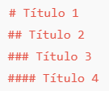
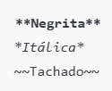
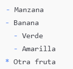
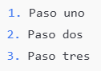
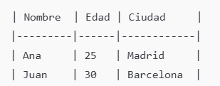
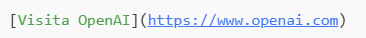
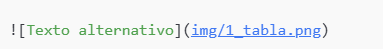

MKDOCS
I'm happy
For full documentation visit mkdocs.org. https://www.mkdocs.org/user-guide/writing-your-docs/
Commands
mkdocs new [dir-name]- Create a new project.mkdocs serve- Start the live-reloading docs server.mkdocs build- Build the documentation site.mkdocs -h- Print help message and exit.- http://127.0.0.1:8000/database/
Project layout
mkdocs.ymlThe configuration file.docs/index.mdThe documentation homepage.*...Other markdown pages, images and other files.- Note when the txt does not allow to save as .md save it : save as "file_name.md" (between double quote)
Command What it does
mkdocs servePreview docs live at http://127.0.0.1:8000/mkdocs buildBuilds the updated site into the site/ foldermkdocs gh-deployPublishes your changes to GitHub Pages- Run on gitbash
Workflow Summary
Edit your .md files in docs/
- Update mkdocs.yml to reflect new pages
- Run mkdocs serve to preview
- Run git add ., git commit -m "...", git push
- Deploy with mkdocs gh-deploy
My mkdocs link https://vpenat81.github.io/vpenadocs/
Markdown commands
Títulos

Texto en negrita, cursiva y tachado

Listas

Lista ordenada

Tablas
- 
| Nombre | Ey | Mensaje |
|---|---|---|
| Neme | tú | puedes |
Enlaces
- 
Imágenes:dentro e la carpeta de docs subir la imagen
- 
- ejemplo:

Bloques de código
Usa el comando git status para ver los cambios.
Desplegar en GitHub Pages
- checar el repositorio en GitHub (público o privado).
- ejecutar en la carpeta de donde esta vpenadocs
- C:\Users\neme_\vpena-docs> mkdocs gh-deploy
- Para forzar el deploy: mkdocs gh-deploy --force
- ir a mi ghpages: https://vpenat81.github.io/vpenadocs/ link
Opcional pero recomendable si no carga en github
1 Limpia tu sitio local - Windows powershell: rmdir /s /q site - Linux bash: rm -rf site
2 Reconstruye tu sitio - mkdocs build - mkdocs gh-deploy --force (le dice a MkDocs que reemplace lo que ya está en la rama gh-pages, incluso si no detecta cambios)